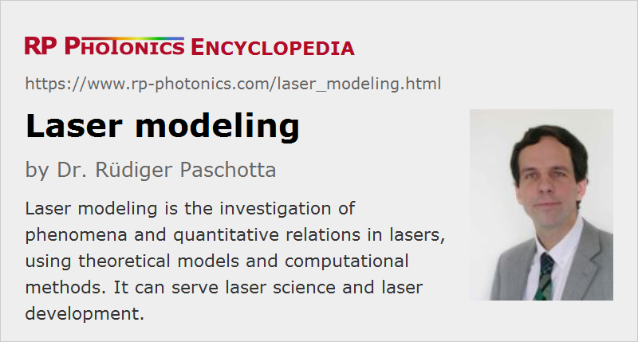

Laser Modeling
Definition: the investigation of phenomena and quantitative relations in lasers, using theoretical models and computational methods
German: Modellierung von Lasern
Categories: lasers, methods, physical foundations
How to cite the article; suggest additional literature
Author: Dr. Rüdiger Paschotta
The operation of lasers involves a complicated interplay of many effects, which can affect a variety of important performance parameters. In many cases, it can be vital to obtain a decent understanding of how various effects interact. As it can be very difficult to obtain experimental access to certain key parameters, and a good understanding can be badly needed even before constructing the first prototype, there is often a need to set up a laser model which allows the calculation and testing of certain aspects of the workings of a laser. The activity of constructing models is called modeling (British spelling: modelling). This term may include the process of applying a model.
What a Model is
A model is essentially a mental object which is constructed so that it resembles in some ways the properties of a class of real objects.
Some important aspects of models are the following:
- Although a model should in some ways be similar to some part of reality, it is always much simpler than reality, because plenty of details have been omitted in the process of constructing the model. (This is called abstraction.) The level of detail of a model should be such that it is as simple as possible while still being useful for studying the phenomena of interest.
- A model contains some number of variables and parameters, related to physical quantities and properties, and a number of assumptions. These assumptions should be made explicit, since they are not always very well fulfilled in reality, and this can easily be overlooked.
- Laser models contain mathematical relations (e.g. differential equations) as essential ingredients. Such relations connect different model variables with each other. The resulting equations can sometimes be solved by analytical means, whereas in other cases numerical methods have to be used. Particularly in the latter case, some computer software is usually required (see below). Such models are often called computer models, but note that the computer and the software are only tools to solve equations and to conveniently display the results; the essence of any such model is a mental construction.
Different models may be used for investigating different aspects of a single laser. As far as possible, such aspects should be separated: a model containing all such aspects, enabling multi-physics simulations, would be complex and difficult to handle, and is needed only where different physical effects interact in an essential way. Figure 1 illustrates how different models can treat the relations between different aspects in a solid-state laser system.

In any case, the purpose of a laser model should be to serve as a tool to enhance the physical understanding of some aspects of certain lasers (see below).
Uses and Benefits of Laser Models
Laser models can be used to investigate a wide range of aspects. Some examples are:
- The conversion of pump power to output power is subject to potentially detrimental influences such as parasitic energy transfer or excited-state absorption in gain media. Rate equation modeling is often used to study such effects.
- The reaction of resonator modes to thermal lensing, misalignment of components, and thermal expansion can be studied.
- Modeling can allow the simulation of the dynamics of laser power and gain, the latter being related to the energy stored in the gain medium.
- The process of shaping optical pulses under the influence of laser gain, chromatic dispersion and nonlinearities can be complicated and better understood via numerical simulations.
- Models can also address the generation of laser noise (such as intensity noise or timing jitter) under the influence of various kinds of technical noise and quantum noise.
Possible benefits of laser modeling include:
- A quantitative understanding of the inner workings allows the optimization of laser designs concerning performance, component costs, compactness, robustness, etc.
- In the case of problems, a model can produce essential insight to analyze the cause and to find a working solution. A model may be used, e.g., to check whether certain suspected effects can be responsible for observed misbehavior, and a simulation can show whether a conceived remedy would be sufficiently effective and which side effects it may have.
- A laser model can save a lot of time and costly experiments by performing “numerical experiments” to find out, e.g., to what extent improvements can be expected from certain design changes, or how strong certain effects really are.
- It also makes it possible to check certain beliefs and thus potentially to improve the level of understanding, which may also trigger useful new ideas. Therefore, laser models can be very valuable as educational tools.
The main benefits are probably saving a lot of time in the laboratory gaining a deeper insight into the relevant physical mechanisms. The magnitude of such benefits, however, depends strongly on the circumstances. Whereas in some cases (e.g. ultrafast fiber lasers) a laser model may be the essential tool for understanding the principle of operation and the limitations, many other laser devices can be designed on the basis of simpler design rules, which make a sophisticated model obsolete.
Software for Laser Modeling
Laser modeling is very often done with some software, which can perform the required calculations and display or store the results. Software may also help with the construction of a model, with the organization of the data, or with convenient visualizations.
Three-dimensional problems often occur in optics; examples are beam propagation and temperature profiles. Finite-element algorithms are often employed in such situations, but there are also techniques to reduce the effective dimensionality of a model so as to simplify the solution greatly without losing important aspects. For example, the fact can be exploited that many lasers exhibit a close to Gaussian laser beam, so that the laser output calculations can be greatly simplified by assuming the Gaussian profile (with parameters from the analysis of resonator modes) while still properly treating the transverse dependencies of optical intensities and the laser gain. This can speed up the calculations enormously, cut down the usage of memory, and simplify the visualization and further analysis. A similar case in nonlinear optics is the use of mode coupling techniques.
Apart from the numerical core, doing the actual calculations, the quality of the user interface is essential. There are different types of user interfaces, which can be more or less appropriate under different circumstances:
- Some software programs offer forms to fill in the required data, and may present the results in the same form, in tables, or in graphical form. Input forms make it easy to get started, at least if they are accompanied by clear descriptions, consistency checks, and the like. However, such software is often not particularly flexible; for example, its forms define a fixed way of parametrizing the data, and it often does not provide convenient ways of systematically checking large numbers of input data sets. Therefore, it is often tedious to go far beyond checking a few sample cases, although the understanding of more general types of relations may actually be of interest.
- Other software is controlled with script files, containing commands to start certain actions. Powerful script-controlled software also allows the use of mathematical expressions instead of numbers only, so that the user can use the most appropriate parametrization. Also, it is often possible on a user level to automate certain tasks, such as doing some calculation for a given range of parameters and storing the results in a user-defined format, and to reuse parts of code with “copy and paste”, rather than e.g. typing a lot of numbers into multiple forms. Such flexibility can be extremely valuable. A disadvantage is that it is usually more difficult to learn a script language, even though a good documentation, combined with a set of sample input files (demo files), can speed up this learning process considerably.
If commercial software with the required features is not available, custom software may be developed. This, however, requires a lot of experience to be efficient, and the poor user interfaces of self-made software often create serious problems. For example, it is difficult to maintain software which requires different versions of source code for different versions of a model and the risk of handling errors can also be very high.
Failing Modeling Exercises
Although laser models can bring extremely valuable benefits, modeling exercises can also fail to produce valid and useful results. Possible causes for such failure include:
- oversimplification, effectively excluding relevant effects from a model
- too sophisticated approaches which may make the handling inconvenient or the computation time too long
- lack of access to required input data
- too large number of parameters to interpret observed results correctly (note that a match between simulated and measured results does not prove the correctness of a model!)
- errors in mathematical equations, programming logic or in physical assumptions, which may be difficult to detect and locate, if sufficiently developed validation procedures are not available
- a lack of experience concerning how to answer the relevant questions once the model works
A Strategy for Successful Modeling
It is very advisable to use a systematic strategy for modeling. This can be based on, e.g., the following steps:
- It is extremely important first to collect a set of specific questions so that correct and comprehensive answers would constitute a real help, e.g. for a laser development project. Omitting this step can result in unfocused, unsystematic and consequently inefficient work.
- Next, it must be determined whether there is a kind of model which is capable of providing the answers, based on the available data, and without excessive amounts of work. There are cases, e.g., where a certain model could in principle be used, but would require more comprehensive or more precise data than are available. This may be a case for abandoning a modeling project at this early stage.
- If the previous steps could be carried out successfully, the model can be constructed. This typically involves decisions concerning what aspects and effects to include or exclude, putting together various equations, and often arranging their evaluation with numerical methods on a computer. Powerful modeling software, e.g. simulation software, can be very helpful.
- Before a model can be used in practice, it needs to be validated, i.e., its correctness must be checked. This can involve the comparison of results with a set of experimental data, which is often not easy, however: a disagreement may indicate an error in the model, or the failure to take into account an important effect, but may also result from incorrect data. Another class of validity tests is based on the comparison with analytical results, which can often be obtained at least for some simplified cases and are relatively flexible and reliable.
- Finally, the model can be used to address the originally formulated questions, to obtain a deeper understanding of the relations between various parameters and of certain limitations e.g. by doing “numerical experiments”.
Curiously, the last step, which should be the most important one, is often forgotten: there are plenty of research papers reporting the construction and perhaps validation of some model, whereas it is not apparent that the model has been used to do some work.
Suppliers
The RP Photonics Buyer's Guide contains 7 suppliers for laser modeling software. Among them:
Questions and Comments from Users
Here you can submit questions and comments. As far as they get accepted by the author, they will appear above this paragraph together with the author’s answer. The author will decide on acceptance based on certain criteria. Essentially, the issue must be of sufficiently broad interest.
Please do not enter personal data here; we would otherwise delete it soon. (See also our privacy declaration.) If you wish to receive personal feedback or consultancy from the author, please contact him e.g. via e-mail.
By submitting the information, you give your consent to the potential publication of your inputs on our website according to our rules. (If you later retract your consent, we will delete those inputs.) As your inputs are first reviewed by the author, they may be published with some delay.
Bibliography
| [1] | How to Build a Transparent Laser – thoughts about a fundamental problem of laser development and a powerful solution (can also view this as a video) |
| [2] | R. Paschotta, tutorial on "Modeling of Fiber Amplifiers and Lasers" |
See also: lasers, laser resonators, rate equation modeling, laser dynamics, pulse propagation modeling, The Photonics Spotlight 2006-11-16, The Photonics Spotlight 2007-02-26, The Photonics Spotlight 2008-11-08
and other articles in the categories lasers, methods, physical foundations
|  |
If you like this page, please share the link with your friends and colleagues, e.g. via social media:
These sharing buttons are implemented in a privacy-friendly way!